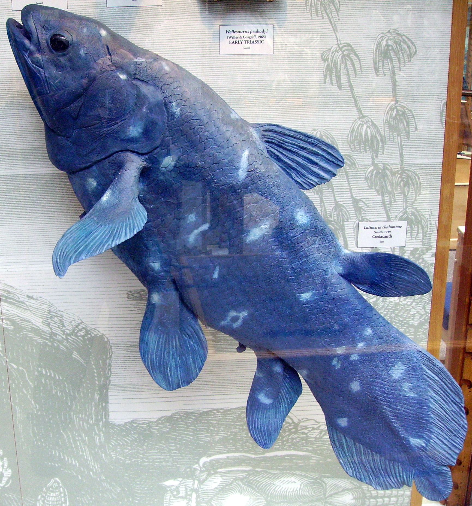

(currently under construction to improve sources and add more fish and also images. it's late.)
1. Coelacanths have been my favourite fish for a long time! I think they are very cool fish as they are, but especially so for their story.
They're already a fish with a number of interesting quirks - they're lobe-finned fish, the only surviving species of their genus, and are more closely related to lungfish and tetrapods than ray-finned fish! That means they're more closely related to us than other "normal" fish!!
Anyway, what's very interesting is they are well-represented in fossils, and for a long time were only known from the fossil record. For a while, they were very famous as a "missing link" fish because of their bony fins (even though that's a theory that has mostly fallen out of acceptance.)
And then, one day, we found out they're still around. They're not extinct. As one of my favourite tumblr posts put it - they're blue. Bright fucking blue!
I love that such an interesting creature already, was then found to still be around, alive and kicking, despite everything, outliving almost every other creature it would've known from when it first came into existence.
Surviving and surviving and surviving. Yes, there's a risk to the anthropomorphizing view of evolution, but here I will allow it. Because it's beautiful, to me. You do not have to change for those around you. Just keep fucking going, and don't ever stop. And be blue!
 By Ballista at the English-language Wikipedia, CC BY-SA 3.0, Link
2. Halibuts are my second favourite fish. As mentioned on the Interesting Stuff page, I actually first became interested in them because I made the crochet pattern! I've always had a latent love for flatfish of various kinds because they have such fascinating and specific biology, but I'd never really focused in on one of them.
Halibut are very interesting for a number of reasons. First of all, they're really fucking big! This is always a joy to me. I love extremes - there's something so interesting about stretching something up to the limit, seeing how things distort and reshape themselves to make it work. Most of the images on the interwebs are of dead fish which can be a bit sad to share but if you're good with that - look them up! They're often a fair amount bigger than a person at the large end.
They have other fascinating aspects, too. Let's talk about flounders more generally - halibut are right-eye flounders, because they undergo a process during maturation where their left-eye moves around their skull to join their right, leaving them pancake-flat with two right-eyes looking up at the surface. It's such a weird and cool process, in a kind of body horror way.
Also! Halibut are split into Atlantic, Pacific, and Greenland halibut through processes I'm sure you can imagine. What's rad, is that they have different sex-determining genes! Atlantic halibut have XX/XY chromosomes (ie males are heterogametic), whereas Pacific & Greenland have ZZ/ZW (like birds!). Timescales are a bit hard to determine, but they've been on different schemes at least 1 million years! That's an insanely long amount of time, for such similar fish. I think this is really interesting for many reasons, but one of them is because it raises questions about sex and how we perceive it and what "femaleness" actually means, among many other things!
3. Giant Oarfish are my current number three, but they're on shaky ground. They currently hold their place due to being another fish with a very extreme body plan (they're sooooo long - in fact, they're the world's longest rayfinned fish), but I find their biology a bit less interesting (and also generally know less facts about them.) I'm a big fan of the common names 'ribbonfish' and 'streamerfish' that are also used for them, I think it's a lovely visual.
They're thought to be the source of many sea-serpent myths, due to their crazy length but also striking colouration (silver with crimson fins.) I do also think it's very interesting that they're one of those fish where few adults have be sighted and studied, and so a lot of science has to be done on juvenile specimens.
Honourable mentions go to mudskippers (honestly likely to take the oarfish's spot as soon as I have time to do a bit more research on them), paddlefish (currently on the comeback AND have an interesting history in illegal caviar fishing) and the big fin squid (shame it's a cephalopod and this isn't a cephalopod list). I've also been recommended some interesting deep-sea fish to check out and though these generally interest me a bit less, there are some really gorgeous fish to check out, so I will update if I have a chance!
An additional note to myself to remember additional fishes I've been recommended: african butterflyfish, bichirs, tripod fish, lumpsuckers, gurnard. From a quick look at african butterflyfish they seem really genetically fascinating so I'm very excited to check these out too.
Back to interesting stuff.
|
<- Trinity | webring | Peter Hebden -> |
|---|